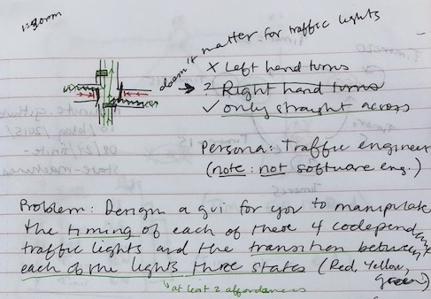
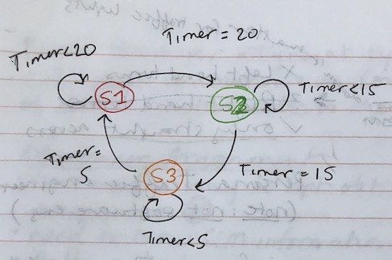
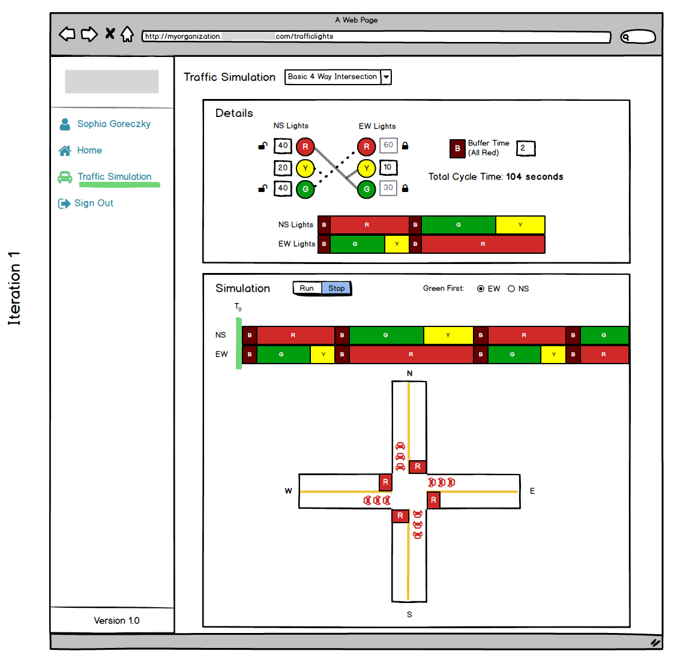
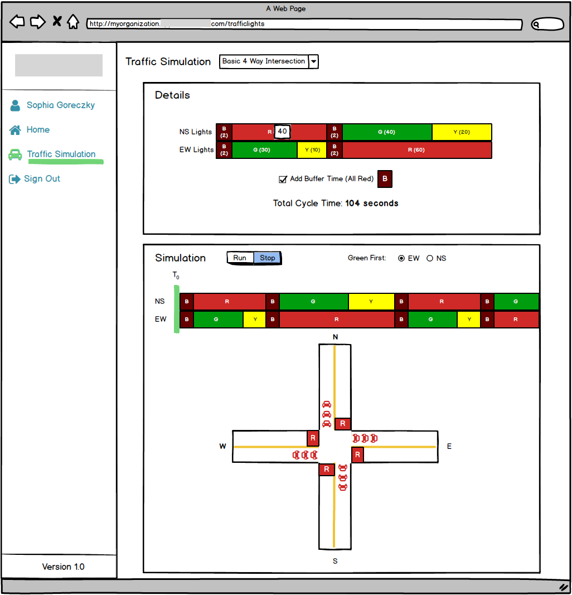
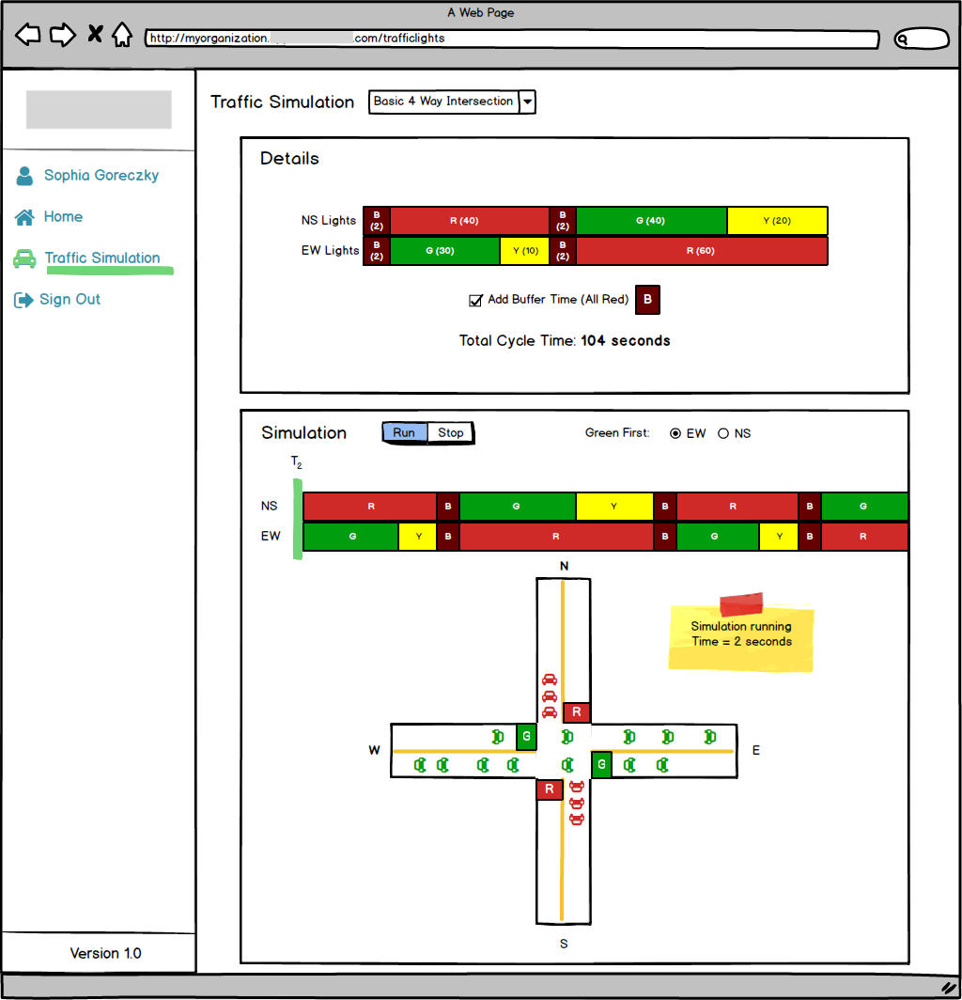

Sophia Goreczky
This is a case study for a company that has been anonymized and exercised interaction design skillset. I spent 1.5 days on this part of the project.
Imagine you are a traffic engineer with complete control over the 4 standard traffic lights (Red / Yellow / Green) at a 4-way intersection. (Assume also that the intersection does not allow left-hand turns. In other words, traffic can only travel straight across the intersection in both directions). Design a web-based GUI for you as the traffic engineer to manipulate the timing of each of these 4 co-dependent traffic lights and the transition between each light's three "states" (R/Y/G).
Here I'm exploring what the problem scope means and if I need to account for any additional variables. I also make note that the persona is a traffic engineer, not a software developer. I know that the solution involves at least two affordances: one to manipulate the timing of the color states and one to manipulate the time between lights.
This is a finite state machine that I find in my research that helps me understand how the traffic light states depend on each other. I also start jotting down my own logic exercise and these leads to reducing the problem from 4 individual lights to 2. Because there are no left turns, there is no need to control each of the 4 lights. To remove as much assumption and bias from my understanding of the problem, I talk about it with different people from diverse backgrounds to see if they understand the problem in the same way. Of course, they never do and that's the magic of diversity and getting that input in early.
Using Balsamiq, I make the first wireframe. While I'm making it, I start with 3 inputs (Red (R), Yellow (Y), Green (G)) for each of the two lights (North South (NS), East West (EW)). I also make a block visualization which is how I make sense of the interconnectedness of NS Red equaling EW Yellow and Green. From real world experience, we know that an intersection may be all red for an additional couple of seconds in order to avoid accidents. I call this period the "buffer (B)." This makes up the building blocks for the traffic simulation.
For the simulation section, I keep it simple and show an intersection with cars. Displaying which traffic light corresponds to NS and EW is difficult in 2D so I opt for making a simple rectangle where the light would be in reality that will change with the corresponding traffic light color. This has the additional benefit of possibly extending this problem outside of this basic 2 light intersection because each of the 4 lights is represented. The building blocks from the first section are now stacked to show the current and future progress of the lights. There is an affordance to start and end the simulation. You can also choose which direction gets to be green first.
Working under limited time does not excuse user testing, even if I have no access to a traffic engineer. I pick a friend that hadn't been briefed on my intial thoughts on this project. He picks up on the dependancy of NS Red and EW Yellow and EW Green quickly with the solid line linking the inputs. He gets confused by the dotted lines and the locks. He points out liking the block section and wanting to be able to manipulate the blocks.
In reality, the two lines that confused him represent the same relationship but I had chosen different line styles to differentiate the dependencies. The locks were meant to show which side of the dependancy the user could manipulate while the corresponding fields were automatically calculated. I conduct another, more informal user test, and the same confusions emerge.
Iteration 2 is a direct response to the user test findings. I want to simplify the problem. Users kept talking about the blocks so I get rid of the input area and merge it directly on the blocks. I'm already happier with this design because it removes the data repetition that had been annoying me about Iteration 1. Iteration 3 takes the building block repetition and tries to merge directly into the simulation area.
Three iterations later, I believe Iteration 2 is the best route forward. Iteration 1 has too much repetition and Iteration 3 is trying to communicate too much at one time. This design needs more understanding of the traffic engineer persona to be optimally useful.
 